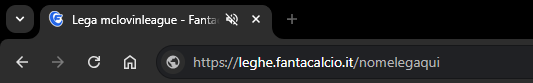
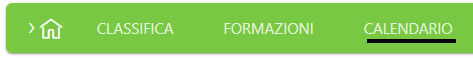
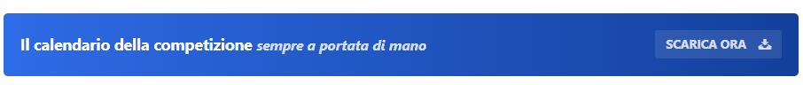
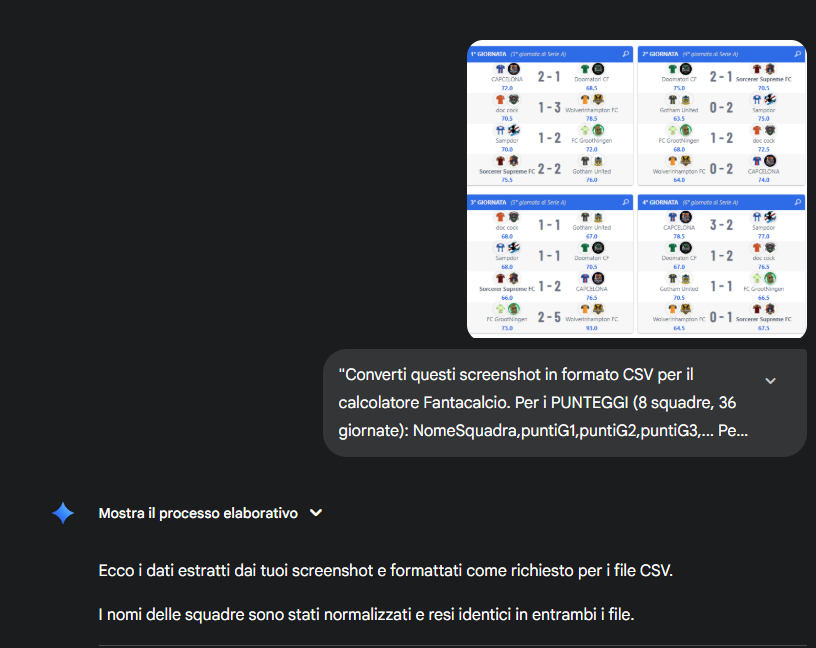
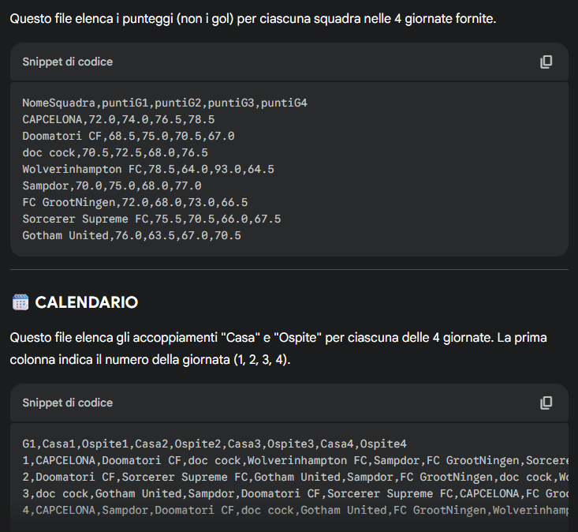

Guida passo-passo per estrarre i punteggi e il calendario dal sito Fantacalcio
Vai sul sito leghe.fantacalcio.it e accedi alla tua lega.
L'URL sarà simile a:

Una volta nella pagina della tua lega, clicca sulla voce "Calendario" nel menu.
Questo ti porterà alla pagina:
Qui vedrai il calendario completo della tua lega con tutti gli scontri.

Nella pagina del calendario, cerca il pulsante "SCARICA ORA".
Cliccando su questo pulsante, scaricherai un file Excel contenente:

Se preferisci non scaricare il file Excel, puoi ottenere i dati direttamente dalla pagina del calendario sul sito Fantacalcio.
Procedura alternativa:
Dovrai organizzare manualmente i dati nel formato richiesto:
Per risparmiare tempo, puoi utilizzare strumenti di IA come Gemini, ChatGPT o altri assistenti per convertire automaticamente i tuoi screenshot nel formato CSV richiesto.
Come procedere:

